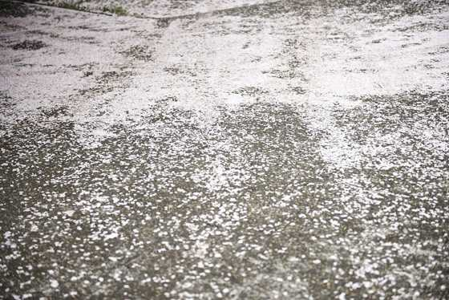

指先のための、小さな一枚。
このキャッチコピーは制作側の案です。
y'snail / 千葉県君津市
準備中
千葉県君津市のネイルサロン
メニュー・料金・営業時間などの詳細は、現在準備中です。お問い合わせください。

ご案内

ご予約・ご相談は、お電話かInstagramから。
準備中Instagramを見る
これは営業用の試作サンプルです
このキャッチコピーは制作側の案です。
y'snail / 千葉県君津市
千葉県君津市のネイルサロン
メニュー・料金・営業時間などの詳細は、現在準備中です。お問い合わせください。

ご予約・ご相談は、お電話かInstagramから。
掲載写真はフリー素材のイメージ写真で、店舗の実際の様子・施術ではありません。日本国外で撮影されたもの、撮影地が不明なものを含みます。